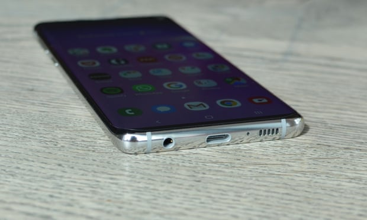
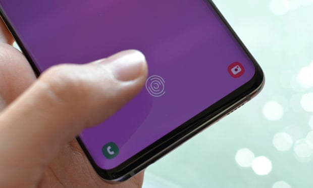
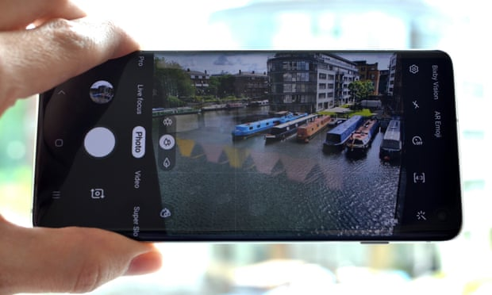

Samsung Galaxy S10 review: the sweet spot
The Galaxy S10 is Samsung’s middle-of-the-road top-end phone, featuring a large screen in a pretty compact body for those who don’t like the current breed of massive flagship superphones.
The regular, non-plus versions of Samsung’s Galaxy S line have always been the sweet spot between size, price and performance. They offer big, beautiful screens in bodies that are practically tiny by today’s giant-phone standards.
The Galaxy S10 isn’t all that small, of course, measuring 70.4mm wide and 149.9mm tall with a stunning 6.1in QHD+ AMOLED screen. It’s about the same size as Apple’s iPhone XS, and considerably smaller than the Galaxy S10+, Huawei P30 Pro and OnePlus 7 Pro. It’s also one of the lightest top-end smartphones on the market at just 157g: 18g lighter than the S10+ and a full 49g lighter than the OnePlus 7 Pro.
Its size and weight make it one of easiest top-end phones to handle and pocket. Not once did the Galaxy S10 feel liable to being dropped, even when using it one-handed in packed trains.
The design of the Galaxy S10 is attractive, particularly in its pearlescent white, but doesn’t rock the boat. The front is glass; so is the back. They both curve at the edges to a thin polished metal band. The screen has a small circular cutout through which the selfie camera pokes.
The display also hides Samsung’s ultrasonic fingerprint scanner for unlocking the phone with your thumb on the screen. Arguably the most unusual aspect of the Galaxy S10 is the existence of a headphone socket in the bottom – a rare sight for a top-end smartphone in 2019.
The phone is water resistant to IP68 standards, or depths of up to 1.5 metres in fresh water for 30 minutes. Drop the S10 in the loo and you’ll be able to rinse it afterwards.
Specifications
- Screen: 6.1in QHD+ AMOLED (550ppi)
- Processor: Samsung Exynos 9820 or Qualcomm Snapdragon 855
- RAM: 8GB of RAM
- Storage: 128GB + microSD card
- Operating system: One UI based on Android 9 Pie
- Camera: rear triple camera, front 10MP selfie-camera
- Connectivity: dual sim, LTE, wifi, NFC, Bluetooth 5, wireless charging and GPS
- Dimensions: 149.9 x70.4 x 7.8mm
- Weight: 157g
Performance
The Galaxy S10 has the same processor, memory and storage as the larger Galaxy S10+ and therefore performs similarly. In this US this means Qualcomm’s Snapdragon 855 processor, but outside in the UK, Europe and many other regions it means Samsung’s own Exynos 9820, as tested here.Generally the S10 is as snappy as most of the competition, with no noticeable lag. It won’t match the very fastest phones, such as the OnePlus 7 Pro, but it keeps up with the competition and is a big leap over the two-year-old Galaxy S8.
Generally the S10 is as snappy as most of the competition, with no noticeable lag. It won’t match the very fastest phones, such as the OnePlus 7 Pro, but it keeps up with the competition and is a big leap over the two-year-old Galaxy S8.
Battery life on the S10 was a disappointing 25 hours between charges. With the screen set to FHD+ and the always-on display (AOD) setting off, the phone would last from 7am on day one until 8am on day two, dying on the train into work. That was while browsing and using apps for five hours with plenty of push messages and emails, watching 60 minutes of offline video, shooting about five photos a day and listening to about five hours of Spotify using Bluetooth headphones.
Cabled charging was fairly slow for the Galaxy S10 too, hitting 77% in an hour, but taking one hour 38 minutes to reach 100% – Huawei’s P30 Pro is fully charged in less than an hour. Wireless charging at up to 15W with a Qi charging matt works well, as does wireless power sharing, turning the phone into an ad-hoc wireless charger for something else.
 Samsung One UI
Samsung One UI
The Galaxy S10 runs Samsung’s new One UI version of Android 9 Pie.
One UI is a big upgrade over previous versions of Samsung’s software, refocused around making phones with large screens more usable. While more beneficial for the larger Galaxy S10+, the S10 still benefits from generally having the top half of the phone for viewing information and the bottom half for touch-based interactions.
That puts menus, buttons and other touch-interaction points in easier reach of your thumb. Others are doing similar with Android, including Google, but Samsung is the most successful to date – something Apple and its back button in the top left of the screen should take note of.
One weak point compared with competitors is Samsung’s gesture navigation system, which simply replaces the standard back, home and overview buttons with swipe pads that do the same thing in the same place on the screen. It’s less ergonomic and fluid than rival systems such as that used by OnePlus, Huawei or even Google’s upcoming Android Q.
Samsung’s Bixby voice assistant is serviceable, but not as good as Google Assistant, often failing to understand what is said, so is safe to just avoid.
Ultrasonic fingerprint scanner
The fingerprint reader is embedded under the screen, using ultrasound to read your ridges through the display. Most other in-display fingerprint readers are optical, which is less secure than ultrasonic sensors, but both can still be fooled like most biometric systems with the right equipment.
Overall, the fingerprint scanner is more convenient built right into the screen, but isn’t as fast as traditional capacitive sensors or the fastest of new optical sensors such as that fitted to the OnePlus 7 Pro.
Camera
The Galaxy S10’s triple rear camera is one of the better systems on the market and is the same as that fitted to the larger Galaxy S10+. It’s main 12-megapixel camera, 12-megapixel telephoto camera and a 16-megapixel ultrawide-angle camera work together for easy and flexible shooting modes zooming from 0.5 to 2x, and on to a 10x hybrid zoom.
In good light the camera produces some really good photos, with great detail, colour and fast autofocus. In low light the S10 is solid but far behind the very best on the market, even with Samsung’s dedicated night mode.
The ultrawide-angle camera is a lot of fun, as is the live focus mode, which records depth information so you can blur the background in portraits or perform colour isolation. You can also post shots straight to Instagram using a dedicated camera mode, while video capture is also excellent.
Overall, the rear camera on the S10 matches rivals from Apple, but falls short of the best from Huawei. The S10 also has an excellent single selfie camera poking through the screen.
 Observations
Observations
- The stereo speakers are pretty good
- The ultrasonic fingerprint sensor is incompatible with most screen protectors, but a compatible one is included in the box
- The haptic vibrations are sharper than last year’s model, but not as good as Apple’s excellent Taptic Engine in the iPhone
- Due to the smaller size I didn’t record any mis-touches of my palm on the screen, which is a common problem for curved-screen devices
Price
The Samsung Galaxy S10 costs £799 with 128GB or £999 with 512GB of storage in white, black, blue or green glass.
For comparison, the 6.4in Galaxy S10+ costs £899, the 5.8in Galaxy S10e costs £669, the 6in Google Pixel 3a XL costs £469, the 5.5in Google Pixel 3 costs £739 and the 5.8in Apple iPhone XS costs £999.
Verdict
The Samsung Galaxy S10 is an all-round great phone that thankfully keeps things at a manageable size. It still has a big, beautiful screen that’s great for watching videos, but it doesn’t make your hand hurt holding it.
Performance is good, the camera’s good and the software is the start of a rethink of how we use big phones. The ultrasonic fingerprint scanner works well enough too and there’s even a headphone socket.
My only real complaint is battery life is only just acceptable. You will have to charge the Galaxy S10 before a night out to make sure it will get you home, or at least activate some of the power saving modes.
If you’re looking for a great phone that’s on the smaller side of the gigantic-phone revolution, there aren’t many better than the Galaxy S10.
- stunning screen, ultrasonic in-display fingerprint scanner, hole-punch notch, wireless charging and powershare, great camera, good performance, good software, good haptics, headphone socket, microSD card slot, dual-sim
- battery life could be better, relatively slow charging, low-light performance not as good as rivals
Pros
Cons
Author
The Guardian
6/11/2021
© 2021 Tech-Week-Tastic Inspired by Samsung, Developed for Samsung